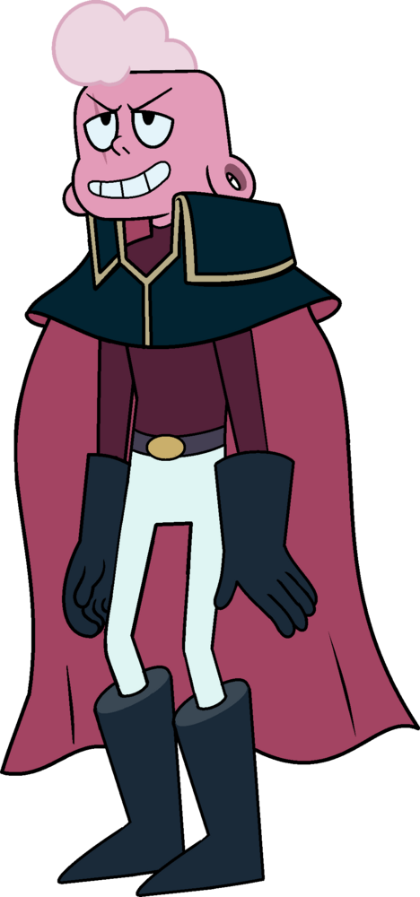

Steven Universo

Steven Diamond Universe/DeMayo, anteriormente Steven Quartz Universe, é um meio humano meio Gem com estatura média. Ele é filho de Greg Universo "Demayo" e da Diamante Rosa(Rose Quartz), ele tem sua pedra localizada no umbigo e desde os seus 12 anos é um Crystal Gem e junto com seus companheiros ajuda a proteger a terra. No filme ele está com 16 anos e é o protagonista.
Ametista
Ametista é uma gem de pele roxa e estatura muito baixa, considerando que ela é muito menor do que um quartzo comum e tem sua pedra localizada no centro do peito. Ela foi a última Gem conhecida a ser fabricada na Terra como parte do projeto do Jardim de Infância. Após a Rebelião, Ametista se tornou uma Crystal Gem e passou a ajudar seus companheiros a proteger a Terra. Não se sabe sua idade exata só que ela tem menos que 4000 anos. Ela é uma das protagonistas do filme.
Pérola

Pérola é uma gem de pele branca e estatura média com sua pedra localizada na testa. Ela foi criada no planeta natal onde servia a Diamante Rosa. Quando a Diamante Rosa decidiu lutar pela Terra e adotar o alter-ego de Rose Quartz, Pérola foi uma primeira jóia de Rose Quartz na Rebelião, tendo um grande amor por ela. Atualmente, é uma das mentoras do seu filho, Steven. Ela também é uma Crystal Gem e junto com seus companheiros ajuda a proteger a terra. Não se sabe sua idade exata também, porém se sabe que ela tem mais de 9000 anos. Ela é uma das protagonistas do filme.
Garnet
Garnet é a fusão de Rubi e Safira e a líder das Crystal Gems, tem pele vermelha e estatura alta. Se juntou às Crystal Gems porque elas aceitavam o fato dela ser uma fusão. Ela tem suas Gems na palma das mãos. Lutou na rebelião e se tornou uma das defensoras da Terra. Após a "morte" de Rose Quartz, Garnet começou a liderar as Crystal Gems e luta para proteger a Terra junto com seus companheiros. Sua idade é de 5750 anos. Ela é uma das protanistas do filme
Espinela
Espinela é uma gem de pele rosa e estatura baixa, tendo sua gem em formato de coração localizada no meio do peito, ela é a antagonista do filme e busca destruir a Terra e Steven e seus alidos. Antigamente, Espinela era muito brincalhona, doce e educada, porém, a Diamante Rosa ter a esquecido e abandonado por 6000 mil anos no Jardim construido para elas, provocou uma mudança no seu comportamento, buscando sua vingança contra o filho de Rosa, Steven.
Greg Universo
Greg Universo, originalmente Greg DeMayo, é um morador de Beach City. Ele era um cantor que fazia turnês por várias cidades, até que um dia, foi fazer um show em Beach City e lá ele conheceu Rose Quartz, se apaixonando pela gem e abandonando sua carreira por ela. Atualmente, cuida de seu filho com Rose, Steven, além de trabalhar no Lava-Carros e ser um milionário após "Som na Caixa, Pai". Ele tem atualmente 42 anos.
Peridot
Peridot é uma ex-antagonista de Steven Universo, ela se tornou uma Crystal Gem após desobedecer e desafiar a Diamante Amarelo. Ela tem sua pele verde, tem sua Gem na cabeça, e tem a habilidade de ferrocinese. Não se sabe sua idade exata porém, sabe-se que ela tem menos de 5000 anos.
Lapis Lazuli
Lapis Lazuli é uma gem de pele e cabelos azuis, sua gem é localizada nas suas costas, embora seu relacionamento com o Steven Universo não tenha sido muito bom no inicio, igual a Peridot, com o tempo ela aceitou a amizade e ajuda de Steven e seu companheiros, e se tornou uma Crystal Gem. Não se sabe sua idade exata, mas se sabe que ela tem mais de 5,500 anos
Bismuto
Bismuto é uma gem de pele cinza, com cabelos coloridos, com sua pedra localizada no peito, ela teve sua forma física destruída e colocada em uma bolha por Rose Quartz após elas entrarem em conflitos de interesses. 5300 anos depois o Steven libertou ela da bolha para juntar as Crystal Gems novamente. Não se sabe sua idade exata, mas se sabe que ela tem mais de 5,700 anos.
Connie Maheswaran
Connie Maheswaran é uma garota descendente de indianos, ela é a primeira Crystal Gem 100% humana. Connie é uma garota de pele morena, corpo magro e olhos negros. Ela é a melhor amiga do Steven, e no último episódio da série Steven Universe Future, é mostrado que estão namorando. Ela tem 15 anos e 5 meses.
Diamante Branco

Diamante Branco ou também conhecida como Branco para até mesmo abreviar é uma Gem do Planeta Natal que faz parte da Grande Autoridade Diamante. Ela é a maior proprietária de colônias em números, até a época da construção da Base Lunar, porém não sai de seu planeta natal por eras, supostamente após realizar a Luz de Corrupção, em reação à morte forjada de Diamante Rosa. Ela tem sua pele totalmente branca, usa uma capa que remete a uma constelação, sua gem é localizada na sua testa. Ela tem a idade de 20000 anos.
Diamente Amarelo
Diamante Amarelo ou também conhecida como Amarelo para até mesmo abreviar é uma Gem que faz parte da Grande Autoridade Diamante, que comanda as Gems do Planeta Natal e de suas colônias. Ela tem sua pele totalmente amarela e sua Gem localizada no meio do peito, sua idade é desconhecida.
Diamente Azul
Diamante Azul ou também conhecida como Azul para até mesmo abreviar é uma Gem do Planeta Natal, Faz parte da Grande Autoridade Diamante, sendo uma das três líderes do Planeta Natal e de suas colônias. Ela tem sua pele totalmente azul e sua Gem localizada no centro do peitom, sua idade é de mais de 6000 anos.
Diamente Rosa
Diamante Rosa ou também conhecida como Rosa para até mesmo abreviar era uma Gem do Planeta Natal que fazia parte da Grande Autoridade Diamante. Ela estava no comando da colonização da Terra até que ela encenou sua própria morte para viver como Rose Quartz e libertar-se de seu papel como um Diamante. Ela tem sua pele rosa e sua Gem localizada no umbigo, sua idade era de mais de 6000 anos.
Sadie Miller
Sadie Miller é a vocalista da banda Sadie Killer e os Suspeitos. Ela costumava ser a balconista do Big Rosquinha, onde trabalhava com Lars. Sadie é pálida e baixa, tem uma face grande e um cabelo loiro, longo e cacheado, com uma pequena cicatriz em seu rosto. Sua idade é desconhecida.
Lars Barriga
Laramie[2] Barriga, ou simplesmente Lars, é um adolescente que morava em Beach City com seus pais, Martha e Dante, e trabalhava no Big Rosquinha, juntamente com Sadie. Após ser abduzido e levado ao Planeta Natal por engano, ele foi morto lá, mas graças aos poderes curativos de Steven ele foi trazido de volta a vida. Após ser revivido, ele adquiriu alguns poderes mágicos e seu tom de pele foi mudado para rosa. Atualmente Lars atua como Capitão, com as Descoloridas sendo sua tripulação. Sua idade é desconhecida.
Rubi
Rubi é uma Gem forte e corajosa, ela faz de tudo para proteger sua esposa, Safira, e juntas elas podem se transformar em Garnet. Ela tem sua pele vermelha, sua Gem na palma da mão esquerda, e tem mais de 5,750 anos de vida.
Safira
Safira é uma Gem que faz parte das Crystal Gems. Ela passa a maior parte do tempo fundida com sua parceira romântica, Rubi, sendo a fusão de ambas: Garnet. Sua pele é totalmente azul e sua Gem fica localizada na palma de sua mão direita, e tem mais 5,750 anos de vida.
Prefeita Nanefua Pizza
Nanefua Pizza (ou Gunga) é uma das personagens de Steven Universo, ela trabalhava em uma loja de pizzas com sua família, porém ela se tornou a nova prefeita de Beach City e a pizzaria ficou para sua família cuidar. Sua idade é desconhecida.
Pérola Azul

Pérola Azul ou apenas chamada de Pérola é uma Gem do Planeta Natal que é membro da corte da Diamante Azul, sendo sua pérola. Sua pele é totalmente azul e ela tem sua Gem no centro do peito. Não se sabe sua idade exata, só que ela tem mais de 5,750 anos.
Pérola Amarela

Pérola amarela é uma Gem do Planeta Natal, ela é a pérola da Diamante Amarelo e é comumente vista junto à ela. Ela tem sua pele totalmente amarela, e tem sua Gem localizada no centro do peito. Sua idade é desconhecida.
Steg Multiverso
Steg Multiverso é a fusão entre Steven Universo e Greg Universo, Steg é alto, um pouco maior que Greg. Seu cabelo é longo, chegando em suas pernas, e tem um grande topete no começo. Sua Gem é localizada no umbigo, ele tem 58 anos e é 25% Gem e 75% humano.
Alexandrite

Alexandrite é a fusão de Pérola, Ametista, Safira e Rubi (Garnet). É a terceira fusão com maior quantidade de Gems apresentada até agora na série. Alexandrite é uma Gem gigantesca, sendo pouco mais alta do que Sugilite, com a pele vermelha rosada em um tom de magenta e seis braços. Sua idade é desconhecida.
Leão
Ele é um tipo de protetor de Steven. Como visto em "Leão 3" e "A Espada de Rose", Leão tem uma conexão com Rose Quartz. Leão possui orelhas redondas, pelo cor-de-rosa, olhos escuros, uma juba rosa claro em forma de estrela e um nariz marrom escuro. Sua idade é desconhecida.